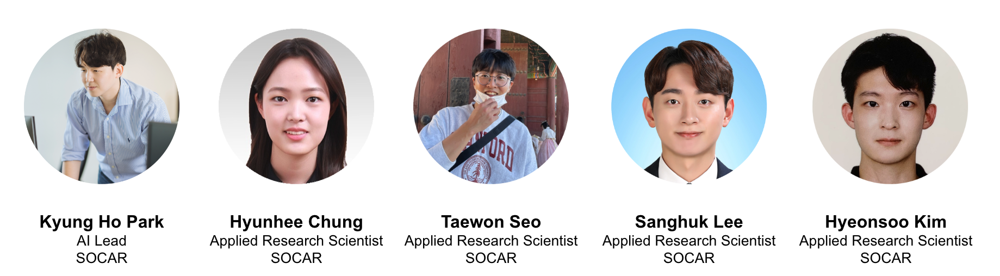

Foundational Model without Descriptive Caption (FMDC) Challenge
in accordance with VPLOW workshop at CVPR 2023, Vancouver, Canada.

Introduction
This year, in accordance with Visual Perception via Learning in an Open World (VPLOW) workshop, we firstly organize Foundational Model without Descriptive Caption (FMDC) challenge in CVPR 2023. This year’s FMDC challenge proposes a zero-shot/few-shot image classification problem leveraging FMs (i.e., CLIP, CoCa), to deal with novel samples in the real world. From an industry perspective, when novel samples occur in the business, we may retrieve and annotate every novel sample to re-train the model. However, it becomes too expensive if we perform this procedure whenever novel samples occur. To this end, utilizing the zero-shot/few-shot classification ability of recently-proposed foundational models can be a reasonable & presumable solution. Therefore, we hereby aim to empower candidate workshop participants to contemplate this challenge and let the students, researchers, and Machine Learning community access the industry-level dataset retrieved in the real world.
Orgainizers
The FMDC Challenge 2023 is hosted by SOCAR. SOCAR is the largest car-sharing platform in Repbulic of Korea, providing a seamless mobility experience from car, public transportations, parking lots, electric bike, and even autonomous vehicles. The organizers are applied research scientists at SOCAR, and currently researching/developing on AI products for the business impact in the real world.

Problem Statement: Zero/Few-shot Image Classification with Foundational Models
In this year’s FMDC challenge, we propose a business problem called car state classification in the open world. A car state classification aims to recognize a car’s various statuses (i.e., exterior damage, dirt, wash, etc.) that occur in the real world, especially in SOCAR, the largest car-sharing platform in the Republic of Korea. The SOCAR requires its users to take pictures of cars before they drive, to monitor the car’s status. Based on these images, SOCAR establishes an image classifier that identifies the car’s various statuses and performs follow-up business actions for efficient business operation (i.e., washing the car if ‘exterior dirt’ is detected, sending the car if harsh damage is detected). The most challenging part of managing this classifier is dealing with novel samples occurring in the real world. For example, how can we identify novel patterns of dirty cars? How can we recognize novel damage patterns such as harsh car breakage or accident? To resolve these challenges, leveraging FM’s effectiveness, we propose the real-world car image dataset and empower the participants to solve this problem. When we use (i.e., fine-tune) FMs in industry, one of the challenging hurdles is the lack of descriptive caption. While web-crawled large-scale datasets such as LAION-5B have affluent captions on each image, real-world images usually have class-level or even weakly-labeled annotations. Then, how can we effectively fine-tune or transfer the inductive bias at the FMs into the particular domain? This will be a primary starting point for your journey to this challenge.
Dataset
In this challenge, we are releasing SOCAR (Socially-Obtained CAR) dataset, which includes ten-thousand car images retrieved from the real world car-sharing operation. For a detailed description of the SOCAR dataset, please refer to the paper SOCAR: Socially-Obtained CAR Dataset for Image Recognition in the Wild
The Training Set includes 13 classes, each representing car’s status that the car-sharing platform can easily understand.
- Exterior Normal
- Exterior Damage
- Bubble Wash
- Car in a Washing machine
- Dashboard
- Cupholder
- Glovebox
- Washer Fluid
- Front Seat
- Read Seat
- Trunk
- Clean Sheet
- Tire
In a Support Set (which can be used under the few-shot learning setting), we provide 6 additional classes which cannot be easily expected in the real world. However, it becomes more challenging in the open-world setting as the pattern of these classes is diverse and cannot be expected a priori.
- Exterior Dirt
- Dirty Cupholder
- Dirty Sheet
- Dirty Seat
- Car on a rainy day
- Car on a snowy day
In the Test Set, we provide a total of 19 classes of car status, which concatenates classes at both the Training and Support set.
Evaluation
In this FMDC Challenge 2023, we will measure Macro F1-Score as an evaluation metric. Under the given Test set, participants submit prediction results at each corresponing test samples. The submission format (.csv) is included in the dataset. After the participants submit their file to the submission site, it will be uploaded to the leaderboard.
Important Dates:
- May 13, 2023: Dataset Release and Challenge Start
- May 19, 2023: Leaderboard Open
- June 15, 2023: Challenge Deadline
- June 18, 2023: VPLOW workshop
Please Note that every deadlines are 23:59 in AoE timezone except for the VPLOW workshop date.
Presentation
To be updated soon! (updated in May 5, 2023)
Contact:
- Kyung Ho Park (kp@socar.kr)
- Hyunhee Chung (esther@socar.kr)
- Taewon Seo (cillian@socar.kr)
- Sanghuk Lee (leonard@socar.kr)
- Hyeonsoo Kim (lucci@socar.kr)
Hosted by SOCAR, 2023.
built using Jekyll and GitHub Pages
images and content: cc-by-sa hyunhee chung 2023 (get source code). Last build date: 2023-05-05.